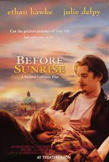
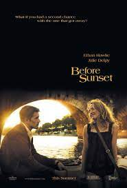
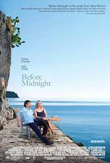

BEFORE TRIOLOGY
Before Sunrise

Before Sunrise" is a 1995 American romantic drama film directed by Richard Linklater and written by Linklater and Kim Krizan. The movie stars Ethan Hawke as Jesse and Julie Delpy as Céline, two young strangers who meet on a train traveling through Europe.
Cast
- Ethan Hawke as Jesse
- Julie Delpy as Céline
- Andrea Eckert as Wife on Train
- Hanno Pöschl as Husband on Train
- Karl Bruckschwaiger as Guy on Bridge
- Tex Rubinowitz as Guy on Bridge
- Erni Mangold as Palm Reader Lady
- Dominik Castell as Street Poet
- Haymon Maria Buttinger as Bartender
Plot
The film begins on a train bound for Vienna, where Jesse, an American, is traveling. He strikes up a conversation with Céline, a French student, and they quickly establish a connection. Jesse convinces Céline to get off the train with him in Vienna, even though he has to catch a flight back to the United States the following morning.
The majority of the film unfolds as Jesse and Céline wander through the streets of Vienna, engaging in deep and intimate conversations about life, love, and personal experiences. As they explore the city, their connection deepens, and they become increasingly drawn to each other.
Throughout the course of the night, Jesse and Céline visit various locations, including a park, a record store, a café, and a church. They share their thoughts on relationships, politics, and the nature of existence, and they develop a strong emotional bond.
As morning approaches, Jesse and Céline realize that their time together is coming to an end. They grapple with the decision of whether to exchange contact information and meet again in the future or to let their encounter remain a fleeting and cherished memory. Ultimately, they decide to seize the moment and make the most of their remaining time together.
The film ends with Jesse and Céline at the train station, where they promise to meet again in six months' time. They part ways with a sense of longing and the hope of a potential future together.
Before Sunset

Before Sunset" is a 2004 American romantic drama film directed by Richard Linklater and written by Linklater, Ethan Hawke, and Julie Delpy. It is a sequel to the 1995 film "Before Sunrise" and continues the story of Jesse and Céline, played by Ethan Hawke and Julie Delpy, respectively.
Cast
- Ethan Hawke as Jesse
- Julie Delpy as Céline
- Vernon Dobtcheff as Bookstore Manager
- Louise Lemoine Torres as Journalist
- Rodolphe Pauly as Boat Attendant
- Mariane Plasteig as Waitress
- Diabolo as Philippe, Céline's son
- Dominik Castell as Street Poet
- Haymon Maria Buttinger as Bartender
Plot
The film takes place nine years after the events of "Before Sunrise." Jesse, now a successful writer, is on a book tour in Paris. At the end of one of his readings, Céline unexpectedly appears. They have a limited amount of time before Jesse must catch his flight back to the United States, so they decide to spend the remaining hours together, wandering through the streets of Paris.
As they explore the city, Jesse and Céline engage in profound conversations about their lives, missed opportunities, and the choices they have made. They reflect on the impact of their brief encounter in Vienna years ago and how it has shaped their lives. The film delves into the complexities of relationships, the passage of time, and the longing for connection.
Before Midnight

Before Midnight" is a 2013 American romantic drama film directed by Richard Linklater and written by Linklater, Ethan Hawke, and Julie Delpy. It serves as the third installment in the "Before" trilogy, following "Before Sunrise" (1995) and "Before Sunset" (2004).
Cast
- Ethan Hawke as Jesse
- Julie Delpy as Céline
- Seamus Davey-Fitzpatrick as Hank, Jesse and Céline's son
- Ariane Labed as Anna, a friend of Jesse and Céline
- Athina Rachel Tsangari as Natalia, a friend of Jesse and Céline
- Yiannis Papadopoulos as Achilleas, a friend of Jesse and Céline
- Walter Lassally as Patrick, a friend of Jesse and Céline
Plot
The film takes place nine years after the events of "Before Sunset." Jesse and Céline, now a couple and parents to twin daughters, are on vacation in Greece. The story primarily unfolds over the course of an evening as they spend time with friends and engage in conversations about their relationship, their individual aspirations, and the challenges they face as a couple.
As the night progresses, tensions arise, and Jesse and Céline find themselves confronting the complexities of long-term commitment, love, and personal fulfillment. The film delves into themes of communication, compromises, and the realities of maintaining a relationship as it evolves over time.
| Film |
Release date |
Budget |
Box gross office |
| Before Sunrise |
January 19, 1995 |
$2.5 million |
$22.5 million |
| Before Sunset |
February 10, 2004 |
$2 million |
$15.8 million |
| Before midnight |
January 20, 2013 |
$3 million |
$23.2 million |